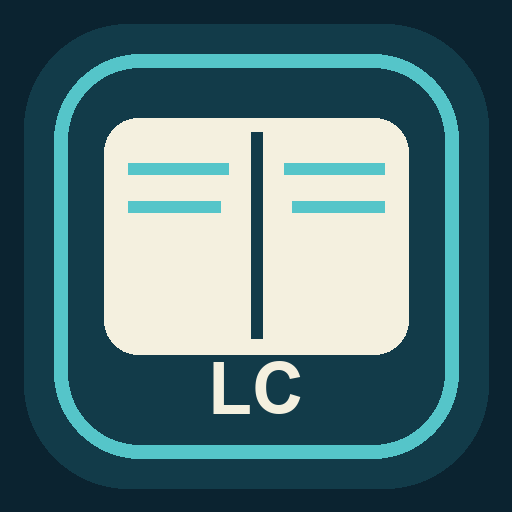
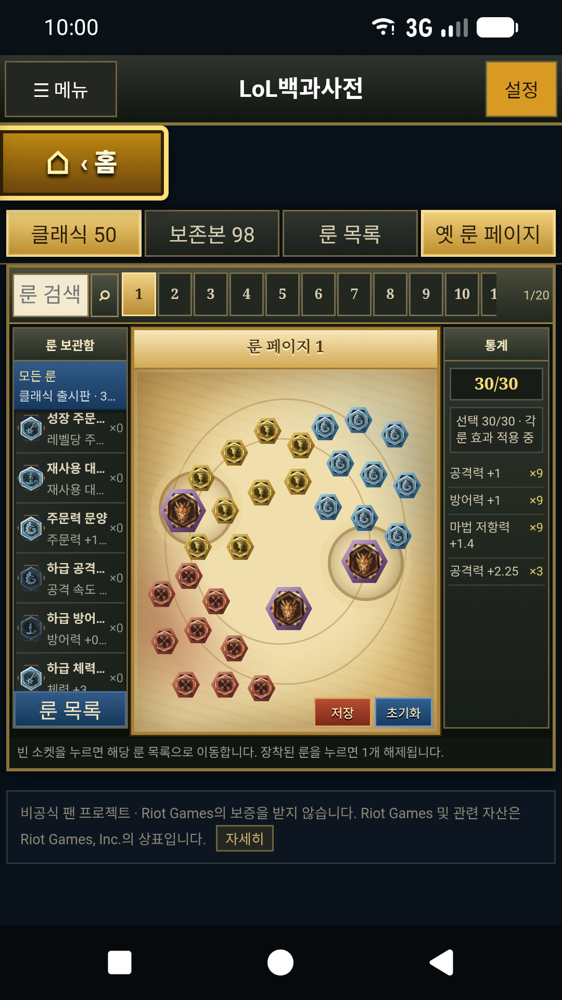
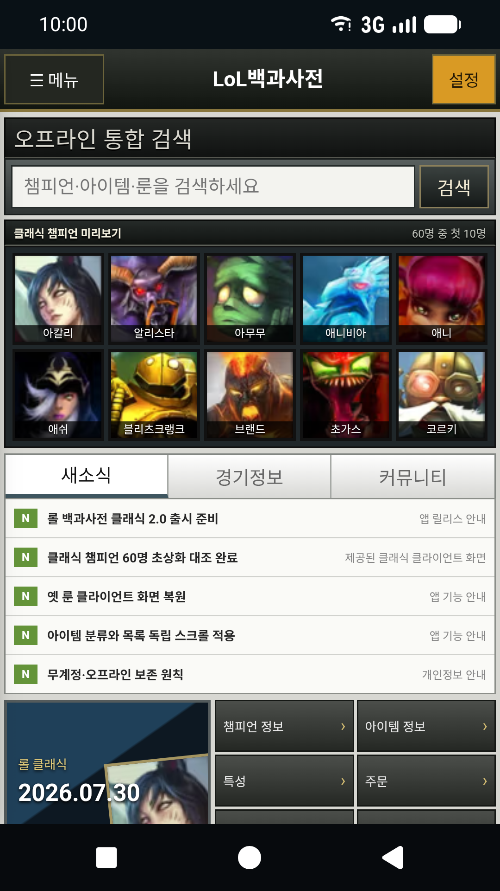
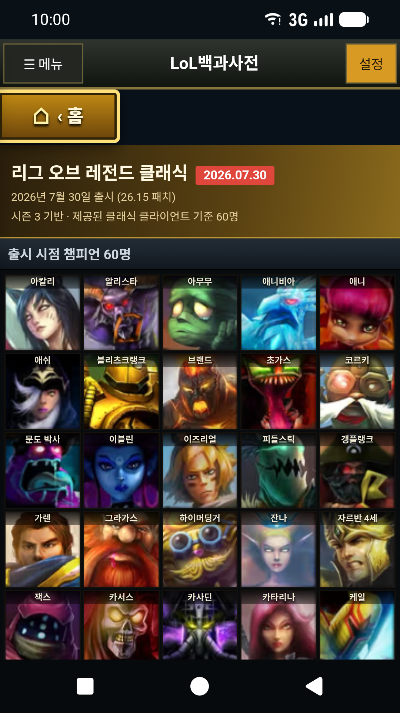
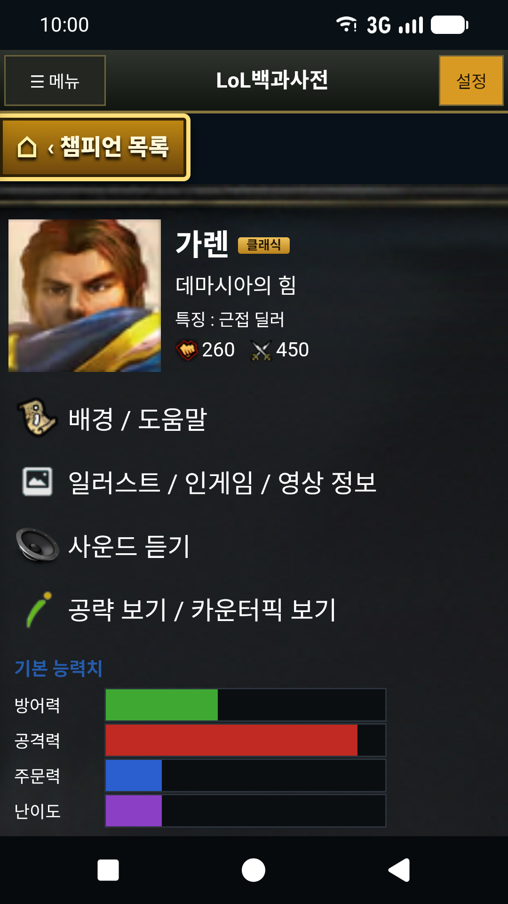
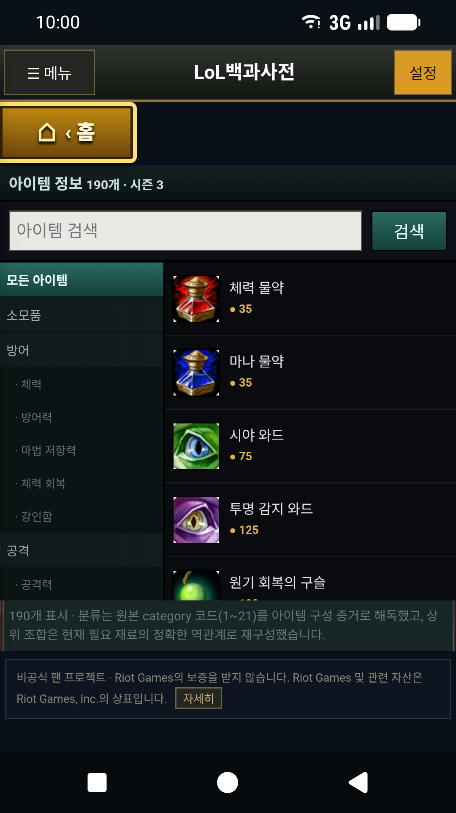
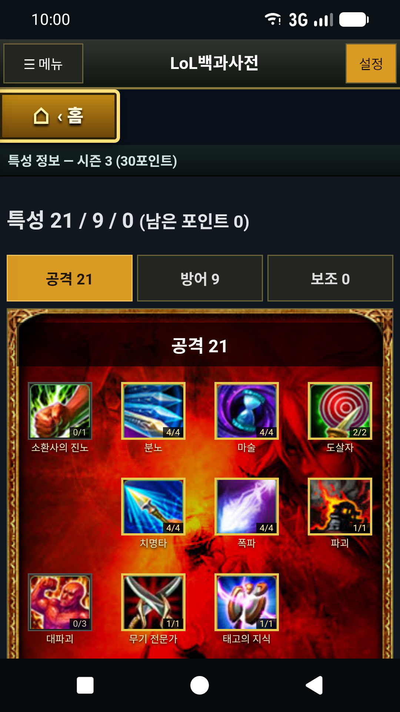
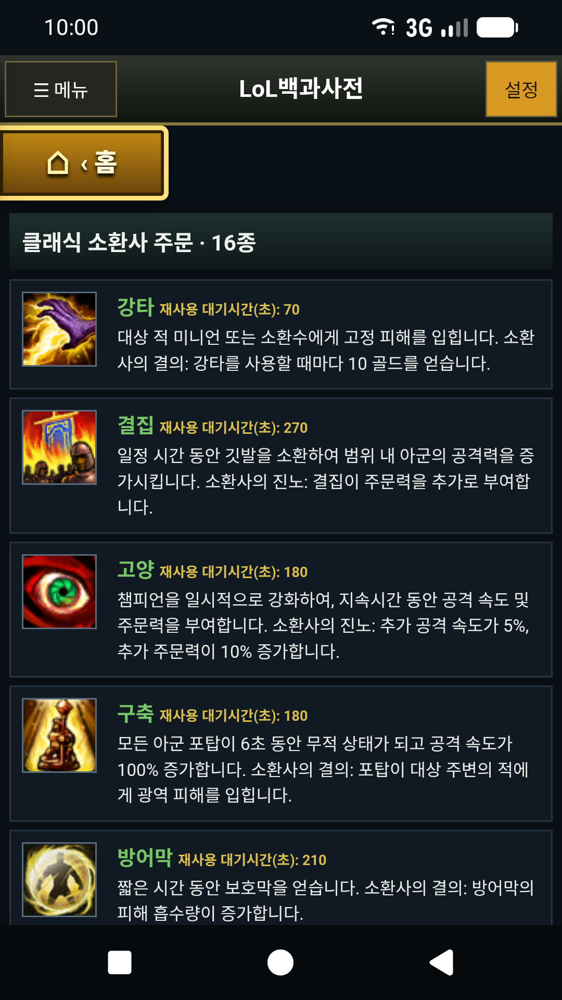
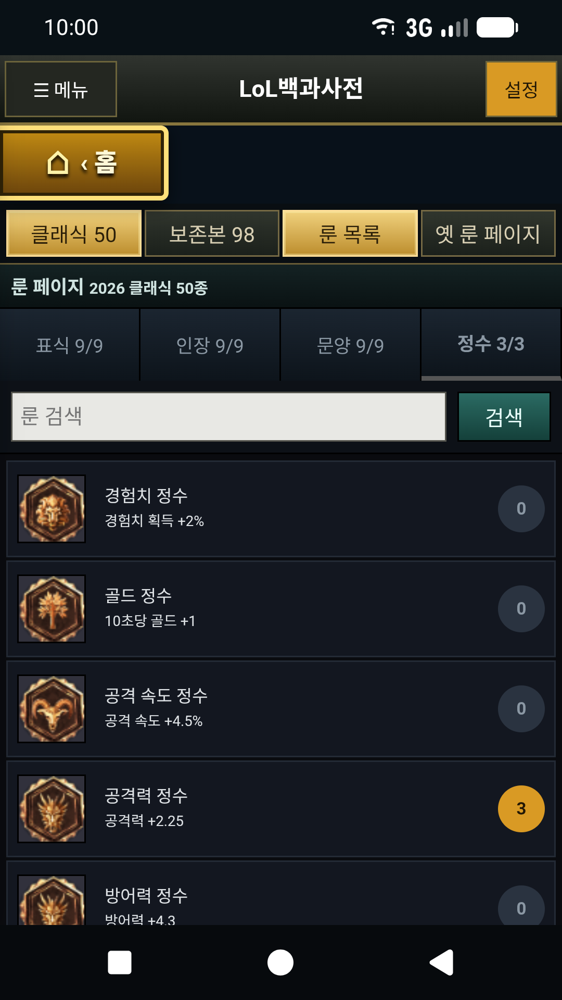

컴팩트 아카이브 홈
챔피언·아이템·룬·용어를 기기 안에서 통합 검색하고, 보존 새소식·경기정보와 기기 내 커뮤니티를 탭으로 탐색합니다.

롤 백과사전 클래식Android · 오프라인 · 비공식 아카이브
롤 백과사전 클래식은 시즌 3·4 시절의 챔피언, 아이템, 특성, 소환사 주문과 룬을 현대 Android 환경에서 살펴볼 수 있도록 재구성한 독립 개발 참고 앱입니다.


구현 완료
컴팩트 홈의 기기 내 통합 검색과 보존 소식부터 챔피언 상세, 아이템 조합식, 특성 투자, 20개 룬 페이지 편집까지 동작하는 오프라인 참고 앱입니다.
챔피언·아이템·룬·용어를 기기 안에서 통합 검색하고, 보존 새소식·경기정보와 기기 내 커뮤니티를 탭으로 탐색합니다.
클래식 클라이언트 참조 화면과 정확히 대조한 60명의 표시 순서·초상을 제공하고, 115명 역사 아카이브의 기본 정보·스킬·상세 페이지를 함께 보존합니다.
190개 아이템의 분류·가격·필요 아이템·상위 조합을 연결하고, 좁은 화면에서도 두 영역을 독립적으로 스크롤합니다.
56개 특성의 선행 조건과 30포인트 규칙을 반영하고, 클래식 소환사 주문 16개를 한곳에 정리했습니다.
검색 가능한 실제 룬 보관함·30개 소켓 보드·통계를 3열로 구성하고, 9/9/9/3 편성을 20개 룬 페이지에 기기 내부 저장·초기화할 수 있습니다.
2026년 7월 29일 검증 스냅샷
최종 캡처에 사용한 동일 빌드로 360·320px 컴팩트 홈과 기기 내 검색, 정확한 60명 초상, 20페이지 룬 클라이언트, 화면 이동과 오프라인 경계를 자동·수동으로 점검했습니다.
아래 수치는 2026년 7월 29일 기준 LOLFLIX 내부 검증 결과이며, Riot Games 또는 Google의 인증을 의미하지 않습니다.
홈 검색·보존 소식, 60명 참조 초상, 30소켓·20페이지 룬 저장·초기화를 포함해 확인했습니다.
홈부터 상세·설정·패치 안내까지 모든 앱 경로가 열립니다.
모두 1080×1920 RGB/sRGB PNG로 동일 빌드에서 캡처했습니다.
두 폭에서 컴팩트 홈·5열 초상·3열 룬과 아이템 좌·우 독립 스크롤의 겹침·가로 넘침이 없음을 확인했습니다.
실제 최종 캡처
과거 프로토타입 미리보기 대신 현재 릴리스 후보 빌드에서 캡처한 최종 화면을 사용합니다.






Google Play 준비 현황
앱 개발·UI·버그 수정·빌드·문서·스토어 이미지 준비는 완료했습니다. 계정 소유자만 할 수 있는 절차를 완료 전으로 오해하지 않도록 별도로 표시합니다.
이 사이트는 출시 준비 상태를 투명하게 설명하기 위한 공개 자료입니다. Play Console 등록 완료나 Riot Games의 승인 완료를 의미하지 않습니다.
현재 기능이 아닌 장기 로드맵
현재 앱은 오프라인 참고 앱입니다. 실시간 계정 조회나 공유 게시판은 Riot 검토, 서버 보안, 운영 정책과 사용자 보호 절차가 준비된 뒤에만 별도 개발합니다.
공식 출처
English review summary
LoL Encyclopedia Classic is an independently developed Android reference archive for historical League of Legends information. The current build requires no account, contains no ads or analytics, requests no Internet permission, and stores user selections only on the device. Riot API and shared community features are roadmap items, not current services.
Working Android release candidate. No production API key. Online accounts, Riot API integration, and shared community services are Roadmap, not current functionality.
제품·정책·권리 문의